Installation of Replacement Leveling Feet
|
|
Caution— A maximum of three replacement feet may be used on any one system. |
Parts and Materials Required
- Replacement Foot Assembly
- 19mm Open Ended Wrench or Adjustable Wrench
- 2.5mm Hex Wrench
- 3mm Hex Wrench
- 4mm Hex Wrench
- Hack Saw or similar tool (optional)
- Pipettor Teach Tools and DITI Tips
Time Required
- 1 Hour
Procedure
- Put on proper PPE.
 Layout the required materials as shown below.
Layout the required materials as shown below.

Note—The foot may be a different color, or the design may have been slightly changed, but the procedures will remain the same. 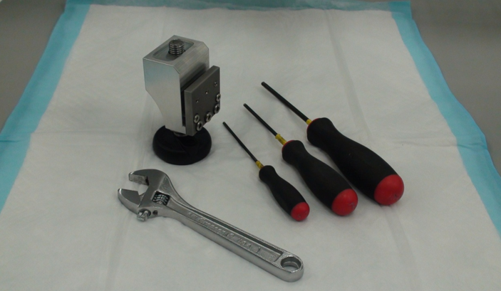
- Move the Panther as necessary to access the damaged foot.
- Prepare a work area around the Panther to be serviced.
- Shutdown the Panther System.
- Open the Universal Fluids Drawer or computer access door as required to access the existing front feet.
- Remove the existing black plastic foot from its threaded stud.
Note—Removal of the lower side trim piece and skirting will improve access to existing foot. 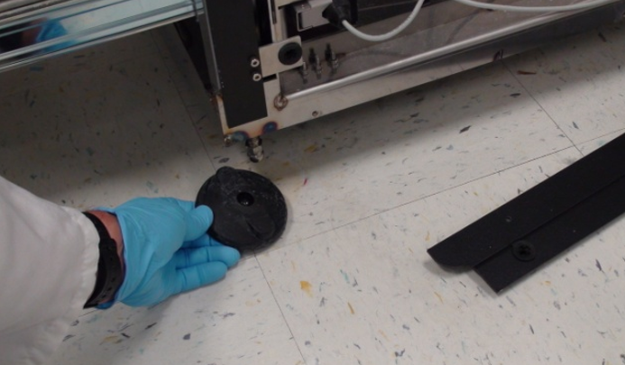
- If possible, completely remove the damaged threaded stud. If it can't be removed, screw it into the system as far as possible so that it won't interfere with the new foot or moving of the system in the future.
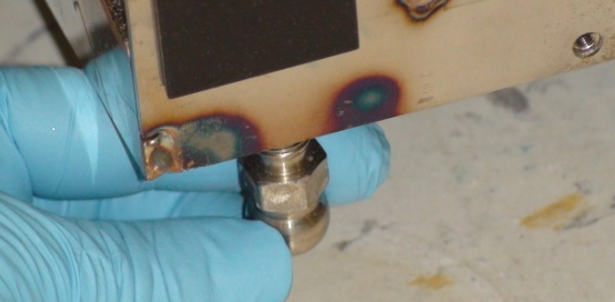
- Optional Step - If the stud can't be removed or adjusted to where it won't interfere with future leveling or moving of the system, it may be necessary to cut the threaded stud off. Using a hack saw or similar tool, cut the threaded stud off as high as possible to reduce the possibility of its interfering with future operations. In most circumstances, the original foot stud may be left in place when utilizing a replacement foot. Cutting off the original foot should only be done when no other option is available.
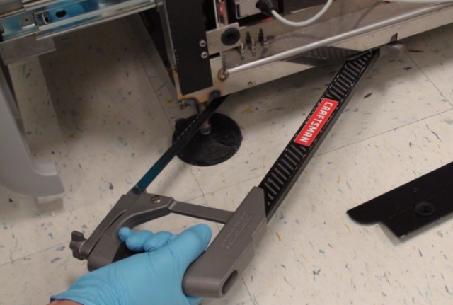

Warning— Be sure that the weight of the Panther system has been taken off of the damaged foot before cutting it off. - Screw the threaded foot all the way into the replacement foot body.
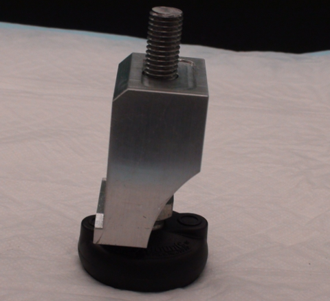
Note—The threaded stud extends all the way through the block and allows the block to be rotated into position and still give the maximum possible adjustment in the limited space available following installation. After the block has been rotated into position and placed close to its final location, the foot is extended out of the block and the top of the block will be in solid contact with the underside of the Panther base plate. - Remove the metal plate from the body of the replacement foot.
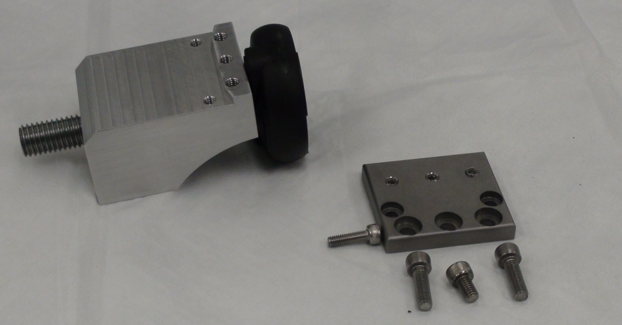
- Note the locations of the M5x8 and M5x16mm screws.
- The location of the M4x14mm screw is determined by where the foot is to be installed on the Panther and will be described later.
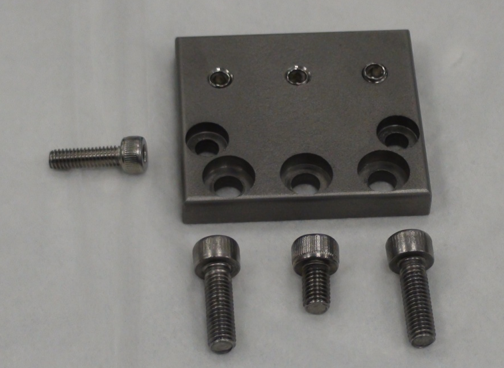
- Slide the replacement foot under the skirting of the Panther near the damaged foot. The new foot will mount to the skirting on the front or rear of the Panther, not on the sides.
Note—If the caster interferes with placing the replacement foot, the caster should be rotated out of the way. The caster should not be able to touch the replacement foot once it is properly installed. 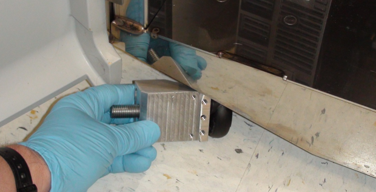
- On some systems it may be necessary to remove the plastic foot from the block prior to installation. The foot can then be replaced after the block has been positioned. The foot will pop off if sufficient force is used.
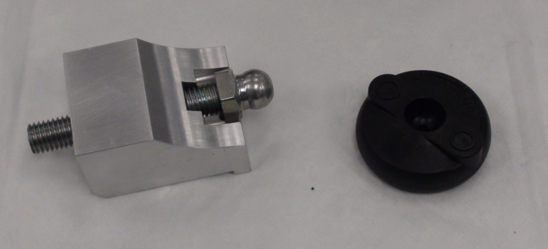
- Rotate the foot to an upright position near the location where it is to be installed.
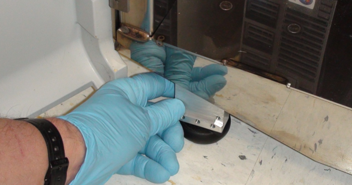
- Unscrew the foot until the top of the aluminum block is gently touching the underside of the Panther, but can be moved to its final location.
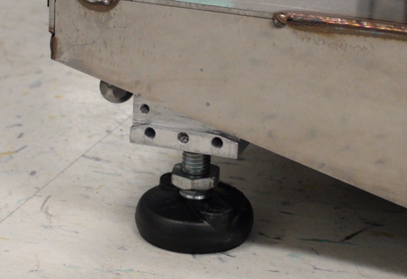
- If being installed in a front position on the Panther, the replacement foot should be placed near the vertical structural support of the Panther frame, and moved toward the center of the system until the skirting is resting on the small ledge of the Replacement Foot. It is important that the skirting is in contact with the angled corner of the small ledge of the Replacement Foot.
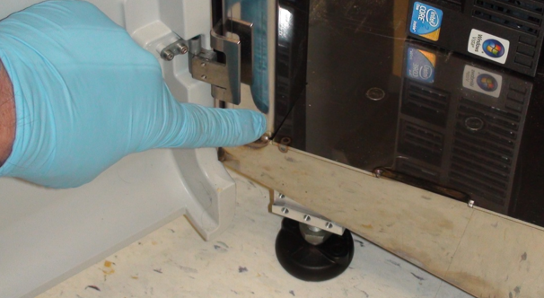
Note—For installation in the front of the Panther, the top of the Bolt-On Replacement Foot should be in contact with the underside of the Panther, the front should be in contact with the skirting and the ledge should contact the skirt at the corner. 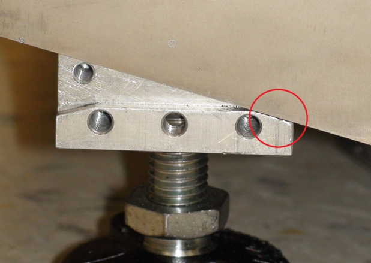
- When installing in the rear, the replacement foot should be installed close to the original foot location. Note that the exhaust muffler is ported through the bottom of the Panther near the right rear corner and should not be obstructed. The vacuum exhaust is ported out the bottom of the Panther around 120mm from the edge of the system behind the Liquid Cooling Module. The replacement foot should be placed such that it doesn't interfere with the exhaust.
Caution— Be sure that the aluminum block is not crooked beneath the Panther and that the top of the block is flat against the underside of the system. 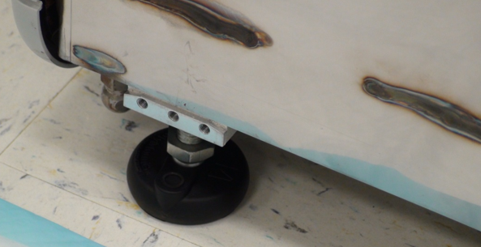
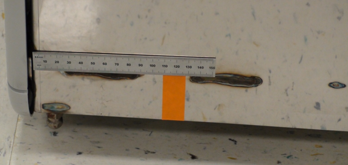
- Extend the foot from the block until the block has come in contact with the underside of the Panther and position the block in its final location.
The top of the block should be in contact with the underside of the Panther. The front of the block should be in contact with the frame skirting and for feet being installed on the front of the Panther, the small ledge should be in contact with the bottom of the Panther skirting. When a foot is being installed in the rear of the Panther, the foot should be placed as close to the original foot position as practical.Note—When mounting in the rear of the system the skirting will not be touching the ledge formed in the replacement foot but should be about 2mm above the ledge. 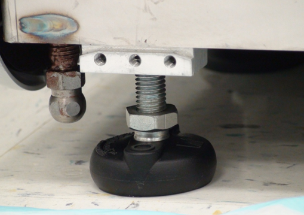
- Back the set screws out of the metal plate such that they are not projecting through the back side.
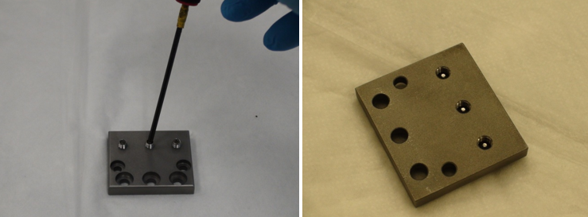
- Install the front plate using the screws provided and tighten securely. The 5x16mm screws are installed in the lower corner positions. The 5x8mm screw is used in the lower center position.
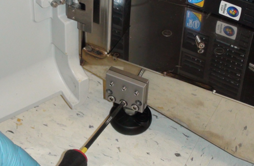
- If the foot is being installed on the right front of the Panther (below the UFD), the 4x14mm screw is used on the right side. The left screw hole will be blocked by the frame skirting.
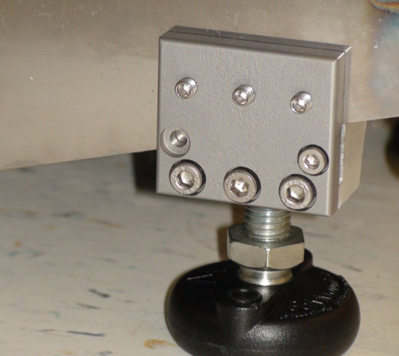
- If the foot is to be installed on either side in the rear of the Panther, the 4x14mm screw will not be used at all and can be discarded. Both screw holes will be blocked by the frame skirting.
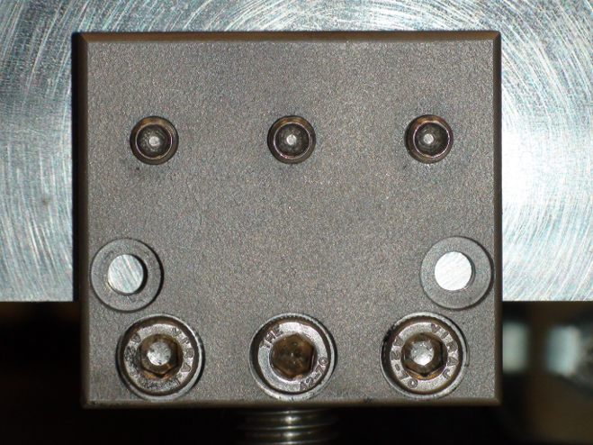
- Tighten the 3 set screws so they are snug. As each of the set screws are tightened, the other two set screws may become loose. Keep tightening each set screw until all are snug. Do not over tighten. The screws only need to be tight enough to keep the foot from moving.
- Once the block is mounted, the adjustable foot may be loosened so the Panther can be moved to its final location and installation completed. The foot can't be fully loosened as the threaded portion will be blocked by the Panther frame. Do not force the foot, damage to the Panther could result.
- Adjust the level of the system with a 19mm wrench.Note—The replacement foot should not be raised such that there are more than 35mm of thread showing. Doing so will compromise the strength of the assembly and it may become unstable.
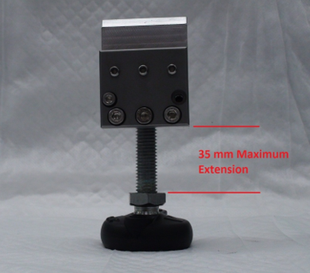
Verification
- Double check that the system is properly leveled.
- Complete Pipettor training.
- Verify that the Linear Distributor is not out of alignment by running a system OQ and re-teaching the Distributor if needed.
- Adjust the TCR Target capture reagent—An assay-specific reagent added as part of specimen pipetting. door alignment and locking solenoid if needed.
 button at the top of the page to send feedback, comments, or change requests.
button at the top of the page to send feedback, comments, or change requests.